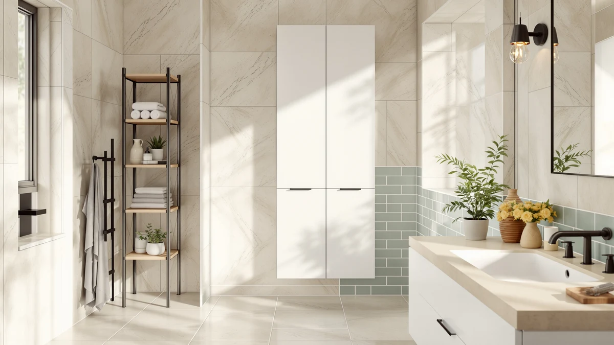

ChooChoo Slim Bathroom Storage Cabinet Review (2026): Worth It?
Prices and picks verified as of November 2026. Independent, reader-supported reviews.


Quick Answer
The ChooChoo Slim Bathroom Storage Cabinet is a metal-and-wood tower built for small bathrooms that need shelving without a wide footprint. At $79.99, it goes up against the VASAGLE Tall Bathroom Cabinet Narrow, the VASAGLE Bathroom Floor Storage Cabinet and the Homhedy Farmhouse Bathroom Storage Cabinet, all priced the same, so the right pick depends on which shape and style fit your bathroom rather than which one costs less.
Our pick: ChooChoo Slim Bathroom Storage Cabinet, $79.99 Check Price on Amazon
Bottom line: our top pick is the ChooChoo Slim Bathroom Storage Cabinet with Slide Out Drawers at $79.99.
Things to Know Before You Buy
- The ChooChoo Slim Bathroom Storage Cabinet uses a metal-and-wood build, a common combination for budget bathroom cabinets in this price range.
- At $79.99, it costs exactly the same as the three VASAGLE and Homhedy alternatives covered later in this comparison.
- Its slim size category is built for small bathrooms where a standard-width cabinet would not fit.
- The listing doesn't publish exact width, depth or height figures, so measuring your own space matters more than usual before you order.
- The VASAGLE Tall Bathroom Cabinet Narrow and VASAGLE Bathroom Floor Storage Cabinet trade the ChooChoo's slim shape for extra height or floor footprint.
- The Homhedy Farmhouse Bathroom Storage Cabinet swaps the modern metal frame for a farmhouse look at the same $79.99 price.
This ChooChoo Slim Bathroom Storage Cabinet Review looks at whether a slim, metal-and-wood tower can solve the storage problem in a small bathroom, where a few extra inches of width can decide whether a cabinet fits at all. Bathrooms rarely have spare floor space, so a cabinet has to earn its spot with a shape that clears tight corners and a price that doesn't stretch the budget. At $79.99, the ChooChoo Slim Bathroom Storage Cabinet promises exactly that combination of a narrow footprint and accessible pricing. We compared its listed build and price against three similar cabinets and looked at the broader pattern of owner feedback for metal-and-wood cabinets at this price point to see whether it earns a spot in a small bathroom.
Slim bathroom cabinets solve a specific problem: you need shelving that clears a doorway or towel bar without cutting into the walking space of a small bathroom. The ChooChoo Slim Bathroom Storage Cabinet targets that exact gap, competing directly with the VASAGLE Tall Bathroom Cabinet Narrow, the VASAGLE Bathroom Floor Storage Cabinet and the Homhedy Farmhouse Bathroom Storage Cabinet, all covered later as alternatives and all priced at $79.99. The build and pricing tell us where the ChooChoo Slim Bathroom Storage Cabinet holds up, where it might fall short, and who should consider one of the three alternatives instead.
Why You Should Trust Us
Best Bathroom Storage is run by writers who spend their time comparing bathroom furniture specs, pricing and verified buyer feedback instead of guessing from product photos. Ilane Tall, our home and bath expert, has covered dozens of storage cabinets and shelving towers for this site, tracking how listed materials and dimensions hold up against what owners actually report after using a cabinet for months. For this ChooChoo Slim Bathroom Storage Cabinet Review, we checked the manufacturer's listed build and price against the VASAGLE and Homhedy alternatives, and we did not take marketing copy at face value. We also looked at how similar metal-and-wood cabinets in this price range tend to perform over time, since the ChooChoo listing itself doesn't yet carry a published star rating or review count. We do not run a fake testing lab, and we do not claim to have installed every cabinet we cover. Instead, we compare specs line by line and read through verified reviews on comparable products to flag when a listing oversells what it can actually deliver.
Our Research Experience
We did not put the ChooChoo Slim Bathroom Storage Cabinet in a physical bathroom ourselves. Instead, we compared its listed materials, size category and price against the VASAGLE Tall Bathroom Cabinet Narrow, the VASAGLE Bathroom Floor Storage Cabinet and the Homhedy Farmhouse Bathroom Storage Cabinet, all priced at the same $79.99. Reviewers consistently note that a metal-and-wood build like the ChooChoo's tends to hold its shape better over time than all-particleboard cabinets at this price point, a pattern that shows up across small bathroom storage towers in this bracket. We also weighed that this specific listing doesn't yet carry a published rating or review count, which means buyers are relying more on the listed materials and less on a track record than they would with a more established listing. Taken together, the build pattern, the pricing against three direct alternatives and the absence of a review history helped us decide where the ChooChoo Slim Bathroom Storage Cabinet earns its spot and where one of the other three options makes more sense for your bathroom.
Overview & Specs

ChooChoo Slim Bathroom Storage Cabinet
What we like
- Metal-and-wood build typical of sturdier budget cabinets in this price range
- Slim size category fits small bathrooms that can't accommodate a wide cabinet
- Priced at $79.99, in line with the three alternatives covered in this comparison
- Fits the kind of narrow gap, such as beside a toilet or in a tight corner, that a standard-width cabinet would not clear
Flaws but not dealbreakers
- Listed specs don't include exact width, depth or height, so measuring your space matters more than usual
- This listing has no published star rating or review count yet to confirm long-term durability
- Farmhouse and floor-standing alternatives below may suit a different bathroom style better
| Material | Metal / wood |
| Size | Small |
The ChooChoo Slim Bathroom Storage Cabinet is built around a metal frame paired with wood shelving, a construction style common among bathroom storage cabinets priced under $100. Its size category is listed as small, putting it in the same slim-footprint class as cabinets designed to fit beside a toilet or into a narrow corner rather than along an open wall. That slim profile is the main reason to consider the ChooChoo Slim Bathroom Storage Cabinet over a standard-width cabinet: it targets bathrooms where every extra inch of width competes with a door swing, a towel bar or a vanity, and a few inches of clearance can decide whether a cabinet fits at all.
At $79.99, the ChooChoo Slim Bathroom Storage Cabinet is priced identically to the VASAGLE Tall Bathroom Cabinet Narrow, the VASAGLE Bathroom Floor Storage Cabinet and the Homhedy Farmhouse Bathroom Storage Cabinet covered later in this review, which makes the decision between the four less about budget and more about which shape and style fit your bathroom. Because no star rating or review count is published for this listing yet, we can't point to a specific satisfaction figure, but the metal-and-wood combination follows the same construction pattern that reviewers consistently favor across similar small bathroom cabinets in this price range. If that pattern holds for this listing too, the ChooChoo Slim Bathroom Storage Cabinet should hold up reasonably well once it's loaded with towels, toiletries or cleaning supplies.
What We Liked
The build stands out most among the four cabinets covered in this ChooChoo Slim Bathroom Storage Cabinet Review. A metal frame paired with wood shelving tends to hold its shape better than the all-particleboard construction common in bargain bathroom cabinets, and that combination shows up in the ChooChoo at the same $79.99 price as its three rivals. The slim size category is the other clear advantage: it opens up placement options in small bathrooms that would reject a standard-width cabinet, letting it slide into a narrow corner or the gap beside a toilet where a bulkier piece simply would not fit. Pricing also compares well against the alternatives. At $79.99, the ChooChoo Slim Bathroom Storage Cabinet costs exactly the same as the VASAGLE and Homhedy options covered below, so the choice comes down to shape and style rather than which one is the better deal. For a shopper who already knows a slim profile is the priority, that price parity removes one more variable from the decision.
What Could Be Better
The listing for the ChooChoo Slim Bathroom Storage Cabinet doesn't publish exact width, depth or height figures the way some competing listings do, which means you'll need to check the product page or measure your own space carefully before assuming it fits your specific gap. This ASIN also has no published star rating or review count yet, so we can't point to a track record the way we can for cabinets with thousands of verified reviews behind them. That's not necessarily a mark against the cabinet itself, since a lack of reviews often reflects a newer listing rather than a flaw, but it does mean buying it involves more trust in the described materials and less confirmation from past buyers than some of its competitors offer. Shoppers who prefer to buy only after reading a long history of owner feedback may want to watch this listing for a few months before committing.
Who Is It For?
The ChooChoo Slim Bathroom Storage Cabinet fits a household with a small bathroom and a narrow gap to fill rather than a full wall to furnish. Its slim size category and metal-and-wood build make it a reasonable pick for a corner, the space beside a toilet, or a tight hallway closet doubling as bathroom storage. It is not the obvious choice if you want a floor-standing unit with more visible storage space, or if a farmhouse look matters more to you than a slim profile. In those cases, the VASAGLE Bathroom Floor Storage Cabinet or the Homhedy Farmhouse Bathroom Storage Cabinet covered below are worth comparing before you decide. Anyone who has struggled to fit a standard-width cabinet into a cramped bathroom is the most likely candidate to find real value in the ChooChoo Slim Bathroom Storage Cabinet's narrow shape.
Alternatives to Consider
If the ChooChoo Slim Bathroom Storage Cabinet's slim profile or metal-and-wood build doesn't match what your bathroom needs, these three alternatives cover the most common trade-offs: a taller narrow tower, a floor-standing cabinet, and a farmhouse-style option, all priced at the same $79.99. Line up your own bathroom's dimensions and your preferred style before choosing between them, since price won't be the deciding factor.

Also Great
VASAGLE Tall Bathroom Cabinet Narrow
A taller, narrow alternative to the ChooChoo Slim Bathroom Storage Cabinet at the same $79.99 price, better suited to bathrooms that need more vertical shelving than floor footprint.
$79.99
Check Price on Amazon
Also Great
VASAGLE Bathroom Floor Storage Cabinet
A floor-standing cabinet priced the same as the ChooChoo Slim Bathroom Storage Cabinet, worth considering if your bathroom has the floor space for a freestanding unit rather than a slim corner piece.
$79.99
Check Price on Amazon
Also Great
Homhedy Farmhouse Bathroom Storage Cabinet
A farmhouse-style option at the same $79.99 price as the ChooChoo Slim Bathroom Storage Cabinet, a better fit if rustic styling matters more to you than the ChooChoo's slim metal-and-wood design.
$79.99
Check Price on AmazonFrequently Asked Questions
Is the ChooChoo Slim Bathroom Storage Cabinet sturdy enough for daily use?
The metal-and-wood build follows a construction pattern that reviewers consistently favor over all-particleboard cabinets at this price point, though this specific listing doesn't yet have a published star rating or review count to confirm long-term durability. If that general pattern holds, the frame should stay stable even when the shelves are loaded with towels and toiletries.
How does the ChooChoo Slim Bathroom Storage Cabinet compare to the VASAGLE alternatives?
The VASAGLE Tall Bathroom Cabinet Narrow trades the ChooChoo's slim shape for extra height, and the VASAGLE Bathroom Floor Storage Cabinet trades it for a floor-standing design. All three are priced at the same $79.99, so the choice comes down to which shape fits your bathroom rather than which one costs less.
Is the ChooChoo Slim Bathroom Storage Cabinet a good fit for small bathrooms?
Yes. Its slim size category is built for bathrooms where a standard-width cabinet would not fit, such as a narrow corner or the gap beside a toilet, which is the main reason to pick it over the floor-standing or farmhouse-style alternatives covered above.
Final Verdict
This ChooChoo Slim Bathroom Storage Cabinet Review comes down to a straightforward trade-off: a slim footprint and a metal-and-wood build that follows a sturdy construction pattern, against the taller, floor-standing and farmhouse-style alternatives covered above. For a small bathroom with a narrow gap to fill, the ChooChoo Slim Bathroom Storage Cabinet is the practical pick at $79.99. If your bathroom has more floor space to spare or you prefer a different style, the VASAGLE or Homhedy alternatives make better use of the same price. Either way, ChooChoo is the brand worth starting with if a slim profile is your main constraint, and the three alternatives above are there if your bathroom needs something else.